Umbrhalia: la próxima ventana

La próxima ventana se abre en
—
días
Eclipse solar total del 2 de agosto de 2027.
Dónde se verá ↓2 de agosto de 2027
La franja de la totalidad
Los cinco eclipses que siguen
| Fecha · UTC | Eclipse | Magnitud | Gamma | Duración | Saros | Se ve desde |
|---|---|---|---|---|---|---|
| 17 ago 2027 07:14 | Lunar penumbral | 0.546 penumbral | 1.280 | 218.6 min penumbral | 148 | Noche en el Pacífico y América |
| 12 ene 2028 04:13 | Lunar parcial | 0.066 umbral | 0.982 | 56.0 min parcial | 115 | Noche en América, Europa y África |
| 26 ene 2028 15:08 | Solar anular | 0.921 | 0.390 | 10 min 27 s anular | 141 | Anular: Ecuador, Perú, Brasil, Surinam, España y Portugal. Parcial: este de Norteamérica, Centro y Sudamérica, oeste de Europa, noroeste de África |
| 6 jul 2028 18:20 | Lunar parcial | 0.389 umbral | −0.790 | 141.5 min parcial | 120 | Noche en Europa, África, Asia y Australia |
| 22 jul 2028 02:55 | Solar total | 1.056 | −0.606 | 5 min 10 s total | 146 | Total: Australia y Nueva Zelanda. Parcial: sureste de Asia, archipiélago malayo, Australia y Nueva Zelanda |
Los eclipses lunares no tienen franja: se ven desde todo el hemisferio donde es de noche. Horas del máximo, redondeadas al minuto. Fuentes: NASA/GSFC (Espenak); cálculo propio.
La coincidencia
Desliza la Luna sobre el Sol
El Sol es unas 400 veces más ancho que la Luna, y está unas 400 veces más lejos.
La ventana se cierra
La Luna se aleja unos centímetros cada año.
Algún día ya no cubrirá al Sol. Nos tocó vivir dentro de esa ventana: Umbrhalia es el nombre de sus minutos de totalidad, cuando Ohr, la conciencia de la materia, puede por fin tocarnos.
Siete puertas
Escucha a Ohr
Rama narrativa: diez cuentos de Ohr, ilustrados y sonoros.
CaminoEntiende la sombra
Por qué ocurre, qué se ve y cómo mirar.
ARTqueología del CieloMemorias de la Umbra
Museo digital: el eclipse en el arte y la historia.
RecordarGuarda tu palabra
Memoria viva y archivo participativo de testigos.
SentirMira el cielo
Activaciones, talleres y divulgación · observación astronómica.
ExistirEntra a la sombra
La instalación inmersiva y la obra.
Cazadores de eclipsesSigue la sombra
Expediciones a la franja de totalidad: 2027, 2028…
CompartirLleva Umbrhalia a tu espacio
Colaboraciones y contrataciones con instituciones.
Palabras de los primeros testigos: Xochicalco 664, Tenochtitlan 1496, Ciudad de México 1691, Londres 1715.
El proyecto